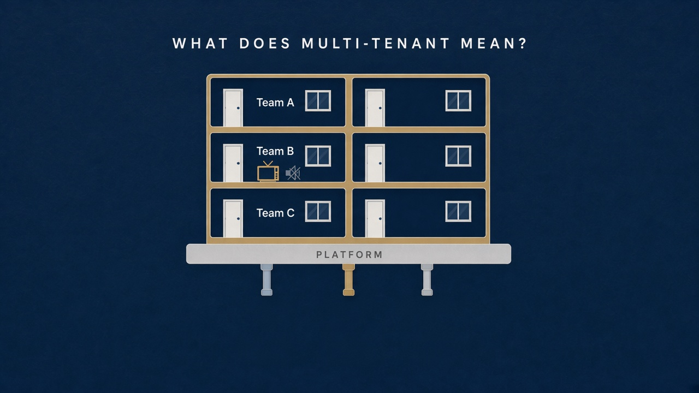

What does "multi-tenant" even mean?
There is quite a lot of confusion about the phrase "multi-tenant". In this short article, I would like to explain what I mean by "multi-tenant" when I talk about platforms at banks and fintechs, because the other common meaning will send you down the wrong path.
In Software-as-a-Service, "multi-tenant" usually means one software product serving many customers that don't see each other. Typical examples are Shopify, where customers can create their web stores without knowing anything about other stores hosted by this software, and Slack, which enables internal chats for companies; again, each customer has no knowledge of other customers.
We are talking about something else here. As an organisation grows, multiple teams work on various apps and all these apps need to run on some infrastructure. If you let this grow organically, each team will re-invent the wheel by provisioning its own infrastructure. The solution is to use a multi-tenant platform that will standardise how workloads are run, how databases are managed, how networks are structured, how observability is configured, etc.
A multi-tenant platform is thus an "opinionated" infrastructure implementation that makes it easy for tenants to run their applications, provided they fit into the mould. One might ask what exactly multi-tenancy is.
At its core, the idea is to allow tenant teams to run applications in a streamlined way. The concept of "tenant" itself implies a level of segregation, just like real-life tenants in a multi-unit building share the overall infrastructure, but each benefits from their own environment isolated from other tenants. Ideally, they won't hear what their neighbour is watching on TV.
The level of isolation you need depends on the requirements imposed on your platform. An e-commerce platform won't have the same compliance requirements as a banking platform running business-critical services. The former might have light requirements, for example by using a shared database with different schemas, and allowing free traffic between tenants. The latter might consider separate database instances and an internal ingress to filter traffic between tenants, and it must be able to prove that isolation to an auditor.
In short, "multi-tenancy" is defined as running applications for different tenant teams on a shared infrastructure platform, with levels of isolation that vary based on the compliance requirements imposed on the platform and/or tenants. Developing a multi-tenant platform is hard and costly, so you should run a cost-benefit analysis before you start. There is no point building one if you have just a few teams and a standard pipeline would be sufficient.